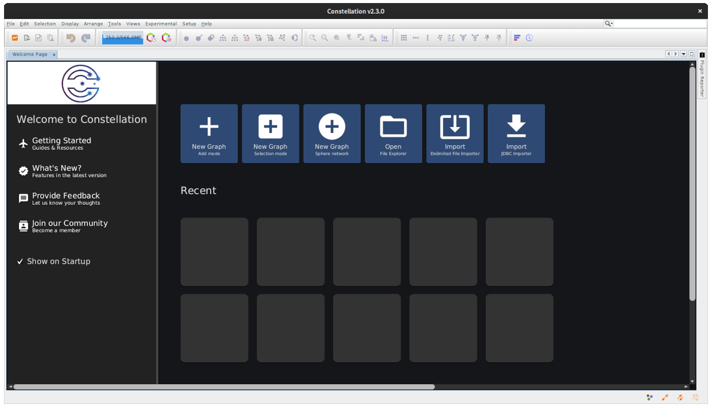
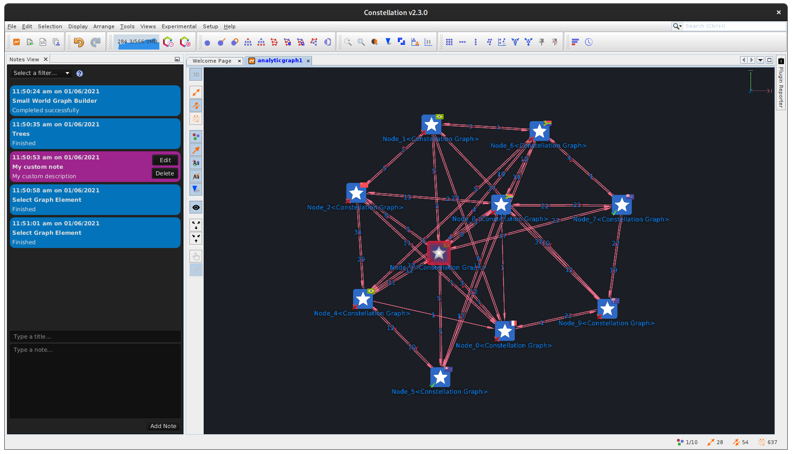
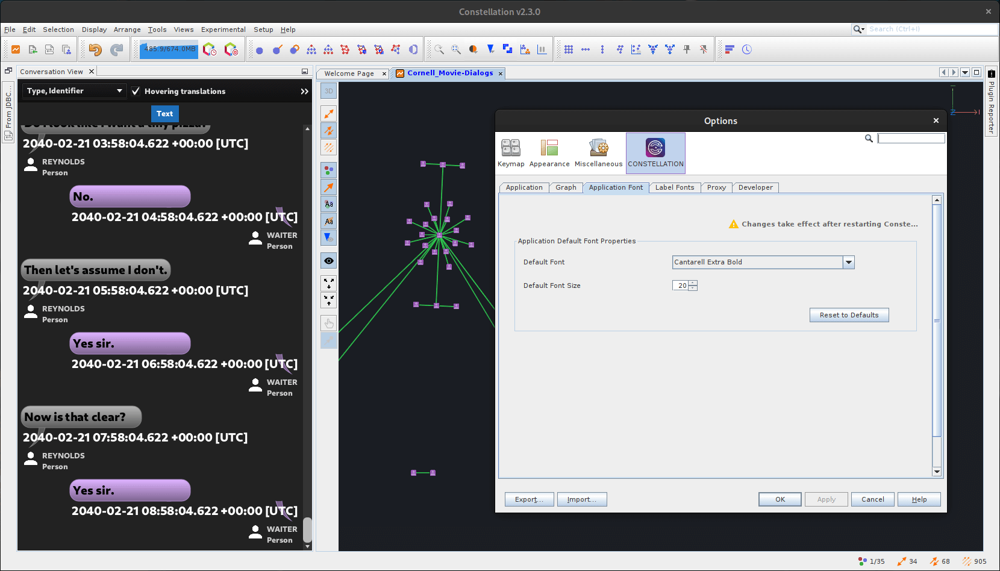
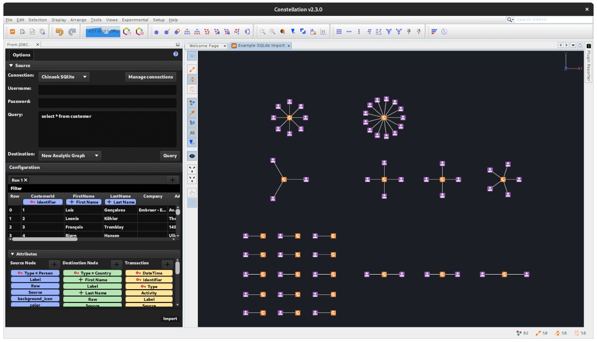
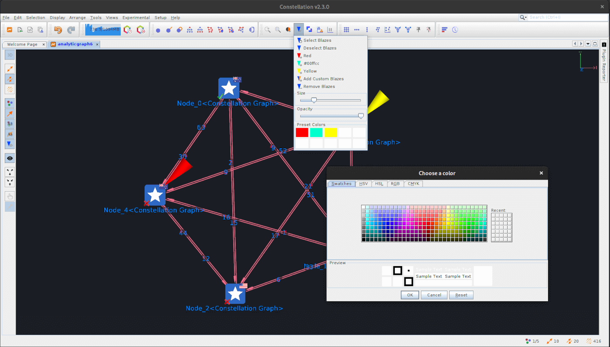
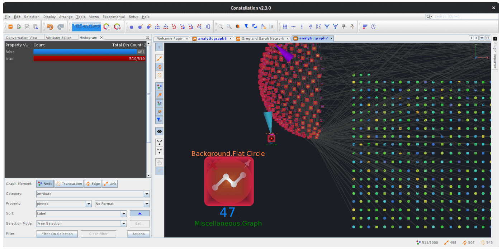
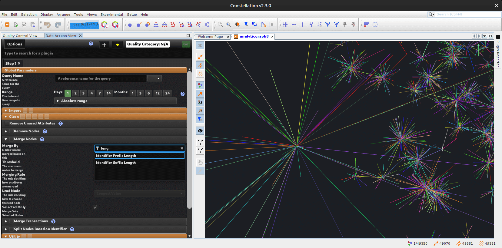

What's new in Constellation v2.3
Here is a list of changes we've added to this version of Constellation v2.3 which are also included in Constellation Cyber v1.2.
Welcome Page
A new default landing page called the "Welcome Page" is loaded by default with helpful links for getting started with Constellation. The old tutorial page you may be familiar with has been converted into a What's New page to display updates to Constellation. You can access this from the menu options on the left hand side.
There is also a preview of graphs that will appear under the "Recent" section allowing you to quickly access your old graphs.
The motivation for the "Welcome Page" is to improve the User eXperience (UX) for new starters. Many thanks to those that contributed to the UX review and design of this Welcome page.
Notes View
This is the first look of the new "Notes View" which is currently available from the experimental menu, given this is still the Minimal Viable Product (MVP) release.
The Notes View can be used to add notes about a graph. It can be found in "Experimental > Views > Notes View", or alternatively via the shortcut "Ctrl+Shift+A".
There are two types of notes that are recorded in the Notes View:
- User Notes: These are "purple" and are created by a user by typing in the tile and description and clicking the "Add Note" button at the bottom of the view. They may also be edited or deleted later via the buttons on the note itself.
- Auto Notes: These are "blue" and are generated and added to the graph automatically by plugin execution, similar to the Plugin Reporter.
We are keen for feedback and suggestions for improvements so that we can promote this to the Views menu.
Application Font Setting
In the Constellation settings, a tab has been added to set the default font family and font size for all of the views in Constellation.
The setting requires a restart of Constellation for it to be applied and the setting can be found via Setup > Options > Constellation > Application Font.
JDBC Importer
The JDBC Importer has been reworked to support MYSQL, MariaDB and SQLite databases to name a few. The look and feel of the importer has been ported over to closely resemble the Delimited File Importer which we think makes the JDBC Importer easier to use.
Note that you will need to download the JDBC connector yourself as we are unable to bundle it with Constellation at this time. For example you can get a copy of the MySQL JDBC driver from this site or SQLite JDBC driver from this site. Follow the instructions on the JDBC Importer help page to how you have to add the connection.
Preset Blaze Colours
The blaze menus have been updated to show preset blaze colors. An option to save a custom color as a preset is represented by a checkbox in the color dialog.
The blaze toolbar menu now displays up to 10 preset colors. It now has the ability to change the color stored by clicking the tile to load a color picker.
The preferences found via Setup > Options > Constellation > Graph now stores preset blaze colors. These can be edited via the color picker upon clicking the colored tile.
Pin Nodes
Nodes can now be pinned, either through the pin/unpin toolbar icons in the arrangements panel, or via the corresponding Arrange menu options. Once pinned, nodes do not move when arrangement plugins are run, but can be manually moved. The "pinned" node attribute stores this information.
Type Ahead for Single Choice Drop downs
Single Choice Drop-Downs are now searchable, which allows you to filter the options in the drop down list based on what is typed.
Performance and Stability Improvements
We've been working hard to make Constellation more stable and able to cope with larger graphs on the same hardware. We have reduced the memory footprint by using caching techniques and other optimisations so you should see that your graphs respond quicker as you interact with it, like deleting nodes.
In the previous release we experimented with aggressive performance improvements but we found this was negatively impacting older hardware. We think we have found the balance now. Please upgrade to this version as soon as possible to take advantage of these performance improvements.